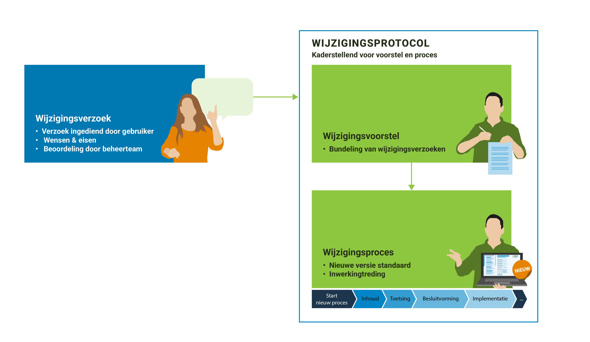

De NLDT Referentie Architectuur bevat afspraken en principes voor een stelsel van digitale tweelingen voor de fysieke leefomgeving. De referentie architectuur is bedoeld voor iedereen die een rol speelt bij het tot stand brengen van een digital twin of digitale tweeling voor de fysieke leefomgeving. De afspraken, uitgangspunten , principes en standaarden die in de referentie architectuur worden gepresenteerd, dragen bij aan het tot stand brengen van een stelsel dat bestaat uit vele toepassingen van het idee van digitale tweelingen.
De referentie architectuur is een "open" architectuur. Dat wil zeggen: de architectuur kan door iedereen, overheid en bedrijfsleven, toegepast worden. Toepassing van de afspraken, principes en standaarden draagt bij aan het tot stand brengen van een "ecosysteem", dat bestaat uit veel te verbinden databronnen en rekenmodellen. Hierdoor wordt het mogelijk om data en modellen uit uiteenlopende sectoren en kennisgebieden met elkaar te verbinden en daarmee twee- of driedimensionale beelden samen te stellen van de fysieke leefomgeving, beleidsvorming te ondersteunen met beslismodellen en simulaties of real time besturingsmogelijkheden voor operationele processen mogelijk te maken.
Gebruikers en organisaties die in de praktijk werken met de referentie architectuur hebben vragen over de toepassing ervan, willen weten welke onderdelen van toepassing zijn, welke versies actueel zijn en welke ontwikkelingen spelen, en hebben mogelijk suggesties voor aanpassingen van de architectuur. Aanpassingen of wijzigingen in de architectuur worden niet zomaar doorgevoerd; voor de ene gebruiker zal een wijziging gering zijn, voor de ander kan het grote gevolgen hebben. Dit wijzigingsprotocol voor de NLDT Referentie Architectuur geeft inzicht in het wijzigingsproces van de architectuur, evenals de belangrijkste taken en verantwoordelijkheden van de betrokkenen (stakeholders) bij het onderhouden en gebruiken van de NLDT Referentie Architectuur. De stakeholders worden op diverse momenten betrokken in dit proces.

Figuur 1Van wijzigingsverzoek tot een nieuwe versie van de standaard
Versiebeheer
Dit document wordt bijgewerkt op basis van ontwikkelingen rond het beheer van de NLDT Referentie Architectuur. In onderstaand overzicht houden wij de status van verschillende versies van dit document bij. Zo ziet u altijd wanneer de laatste versie is verschenen.
Tabel 1 - Versiebeheer van het document wijzigingsprotocol
Versie
Datum
Status
Aanpassing
0.9
25 September 2026
Concept
Status van dit document
Dit is een werkversie die op elk moment kan worden gewijzigd, verwijderd of vervangen door andere documenten. Het is geen stabiel document.
Conformiteit
Naast onderdelen die als niet-normatief gemarkeerd zijn, zijn ook alle diagrammen, voorbeelden, en noten in dit document niet-normatief. Verder is alles in dit document normatief.
1. Inleiding
Dit onderdeel is niet normatief
De NLDT Referentie Architectuur bevat afspraken en principes voor een stelsel van digitale tweelingen voor de fysieke leefomgeving. De referentie architectuur is bedoeld voor iedereen die een rol speelt bij het tot stand brengen van een digital twin of digitale tweeling voor de fysieke leefomgeving. De afspraken, uitgangspunten , principes en standaarden die in de referentie architectuur worden gepresenteerd, dragen bij aan het tot stand brengen van een stelsel dat bestaat uit vele toepassingen van het idee van digitale tweelingen.
De referentie architectuur is een "open" architectuur. Dat wil zeggen: de architectuur kan door iedereen, overheid en bedrijfsleven, toegepast worden. Toepassing van de afspraken, principes en standaarden draagt bij aan het tot stand brengen van een "ecosysteem", dat bestaat uit veel te verbinden databronnen en rekenmodellen. Hierdoor wordt het mogelijk om data en modellen uit uiteenlopende sectoren en kennisgebieden met elkaar te verbinden en daarmee twee- of driedimensionale beelden samen te stellen van de fysieke leefomgeving, beleidsvorming te ondersteunen met beslismodellen en simulaties of real time besturingsmogelijkheden voor operationele processen mogelijk te maken.
Gebruikers en organisaties die in de praktijk werken met de referentie architectuur hebben vragen over de toepassing ervan, willen weten welke onderdelen van toepassing zijn, welke versies actueel zijn en welke ontwikkelingen spelen, en hebben mogelijk suggesties voor aanpassingen van de architectuur. Aanpassingen of wijzigingen in de architectuur worden niet zomaar doorgevoerd; voor de ene gebruiker zal een wijziging gering zijn, voor de ander kan het grote gevolgen hebben. Dit wijzigingsprotocol voor de NLDT Referentie Architectuur geeft inzicht in het wijzigingsproces van de architectuur, evenals de belangrijkste taken en verantwoordelijkheden van de betrokkenen (stakeholders) bij het onderhouden en gebruiken van de NLDT Referentie Architectuur. De stakeholders worden op diverse momenten betrokken in dit proces.
1.1 Waarom een wijzigingsprotocol
In dit wijzigingsprotocol staan de sturende principes achter het wijzigingsproces voor de NLDT Referentie Architectuur; de manier waarop wijzigingen in de architectuur plaatsvinden in afstemming met de stakeholders en gebruikers. Met het protocol wordt elke wijziging van de architectuur een voorspelbaar en transparant proces voor beheerders, software leveranciers en gebruikers van de architectuur. In het protocol zijn basisbegrippen en uitgangspunten uiteengezet voor het wijzigingsproces, bijvoorbeeld wat onder nieuwe en volgende versies van de architectuur verstaan wordt en wanneer deze nieuwe versie(s) verwacht mogen worden. Tevens is een processchema uitgewerkt, dat invulling geeft aan de stappen die de stakeholders met elkaar doorlopen om tot een wijziging van de architectuur te komen.
1.2 Begrippen
Begrip
Uitleg
NLDT Referentie Architectuur
De referentie architectuur bevat afspraken en principes voor een stelsel van digitale tweelingen voor de fysieke leefomgeving. De referentie architectuur is bedoeld voor iedereen die een rol speelt bij het tot stand brengen van een digital twin of digitale tweeling voor de fysieke leefomgeving. De afspraken, uitgangspunten, principes en standaarden die in dit document worden gepresenteerd, dragen bij aan het tot stand brengen van een stelsel dat bestaat uit vele toepassingen van het idee van digitale tweelingen.
GI-Beraad
Het GI-beraad doet aanbevelingen aan de minister van Binnenlandse Zaken, overige ministers en overheidsorganen over de strategische onderwerpen op het gebied van de geo-informatie in de publieke sector in Nederland. Het GI-beraad bestaat uit vertegenwoordigers van de verschillende gebruikersgroepen uit de publieke sector, zowel van het Rijk, de provincies, gemeenten en waterschappen.
NLDT stuurgroep
De NLDT heeft een interbestuurlijke stuurgroep die optreedt als adviesgremium. Deze stuurgroep bewaakt de verbinding tussen de organisatorische en beleidsmatige kant van gebiedsontwikkeling en de technische doorontwikkeling van digitale tweelingen (zoals standaarden, experimenten en hergebruik van componenten).
Werkgroep NLDT Architectuur
Een werkgroep bestaande uit experts uit het werkveld, die wijzigingsvoorstellen voor de architectuur beoordelen, voorbereiden en na accordering verwerken in de architectuur.
Wijzigingsprotocol
Hiermee wordt het geheel van vastgelegde regels en afspraken voor het wijzigen van de NLDT Referentie Architectuur vastgelegd.
Wijzigingsproces
Het wijzigingsproces is de daadwerkelijke wijziging van de architectuur op een bepaald moment. Het volledige wijzigingsproces doorloopt de fasen van het wijzigingsprotocol met een datum van inwerkingtreding van de nieuwe versie van de architectuur.
Wijzigingsverzoek
Wijzigingsverzoeken zijn wensen voor aanpassing van de architectuur. Een wijzigingsverzoek doorloopt het wijzigingsproces en kan leiden tot een Wijzigingsvoorstel.
Wijzigingsvoorstel
In het wijzigingsproces worden meerdere wijzigingsverzoeken meegenomen en gebundeld tot één wijzigingsvoorstel voor het wijzigen van de NLDT Referentie Architectuur.
2. Gebruik van het wijzigingsprotocol
Het wijzigingsprotocol schrijft een vast stramien voor het wijzigen van de NLDT Referentie Architectuur voor. Het protocol benoemt de fasen en de op te leveren resultaten. Belangrijk zijn de randvoorwaarden en uitgangspunten. De gebruikers, deskundigen (experts) en andere stakeholders van de NLDT Referentie Architectuur worden bij het wijzigen van de NLDT Referentie Architectuur nauw betrokken.
Het wijzigingsprotocol voor de NLDT Referentie Architectuur geeft:
Inzicht in het behandel- en besluitproces dat ten grondslag ligt aan het versiebeheer;
Inzicht in de wijzigingsverzoeken;
Inzicht in een voorgestelde wijziging van de architectuur;
Stabiliteit aan de architectuur;
Continuïteit aan de architectuur;
Een eenduidige aanpak.
2.1 Releasebeleid
2.1.1 Nieuwe versie van de architectuur
Een release is een nieuwe uitgave van de architectuur. De wijzigingen binnen een release wordt gedocumenteerd en vastgelegd in de sectie versiemanagement van de architectuur. De gebruiker kan zo nagaan op welke plaatsen de betreffen de architectuur gewijzigd is. De nieuwe release kenmerkt zich ten opzichte van de oude versie door een hoger versienummer. Bij de release is ieder product van de architectuur voorzien van een nieuw versienummer conform Semantic Versioning (SemVer). Binnen SemVer heeft elk product zijn eigen versienummer conform de X.Y.Z schrijfwijze, bijvoorbeeld versie 2.1.0 (=X.Y.Z):
X-wijziging. Indien de NLDT Referentie Architectuur een majeure update krijgt met relatief veel nieuwe en ingrijpende wijzigingen dan wordt de architectuur als geheel aangeduid met een X wijziging. Frequentie: op voorstel van Geonovum en in overleg met de NLDT Stuurgroep.
Y-wijziging. Indien de NLDT Referentie Architectuur een beperkte update krijgt met een relatief klein aantal en minder ingrijpende wijzigingen dan wordt de architectuur als geheel aangeduid met een Y wijziging.
Frequentie: op voorstel van Geonovum en in overleg met de NLDT Stuurgroep.
Z-wijziging. Dit zijn bugs/fouten of aanvullingen in een toelichting, die geen impact hebben op de wezenlijke architectuur.
Frequentie: zo spoedig mogelijk na constatering door Geonovum.
Na het uitbrengen van een nieuwe versie van de architectuur is deze nieuwe versie beschikbaar en vindbaar via de Geonovum website.
2.1.2 Oudere versie van de architectuur
De SemVer-methodiek schrijft backwards compatibility voor op het Y-niveau. Een nieuwe versie dwingt daarmee geen directe overstap af bij de gebruikers, tenzij anders (bijvoorbeeld wettelijk) bepaald. Na het uitbrengen van de nieuwe versie van de architectuur wordt de ontwikkeling van de oude versie stop gezet.
Voor het onderhoud en de ondersteuning van een oude versie van een standaard gelden de volgende uitgangspunten:
Aan een oude versie worden geen nieuwe features toegevoegd, geen aanpassingen gedaan na het uitbrengen van een nieuwe versie. Verzoeken om aanpassing en wijziging voor nieuwe functionaliteit worden niet meer in behandeling genomen. Correcties (Z-wijzigingen) worden wel uitgevoerd op de vorige versies zolang deze nog ondersteund worden.
Bij oplevering van een nieuwe versie wordt de voorgaande versie nog een van te voren vastgestelde periode ondersteund. De duur van de overgangsperiode wordt mede bepaald door de omvang van de wijzigingen (X, Y en Z wijzigingen op de vorige versies), de staat van ontwikkeling van de architectuur, en of de architectuur in voorlopig dan wel permanent beheer is.
Na het uitbrengen van een nieuwe versie van de architectuur blijven oudere versies beschikbaar en zijn vindbaar via de Geonovum website.
2.2 Proces varianten
In paragraaf 2.1 releasebeleid zijn de X, Y en Z wijzigingen uitgelegd. Wijzigingen kennen drie procesvarianten. Eén voor X wijzigingen, één voor Y wijzigingen en één voor Z wijzigingen.
De start van het proces is voor alle varianten hetzelfde. Op de github repository wordt een issue ingediend. De impact van deze wijziging wordt door de Werkgroep NLDT Architectuur beoordeeld. Deze eerste impactanalyse beoordeelt tot welke SemVer categorie de wijziging hoort en wat de effecten van de wijziging zijn.
Proces voor X en Y wijzigingen
X en Y wijzigingen vergen volledige afstemming en het doorlopen van alle in paragraaf 5.1 beschreven fasen: Inhoud, Toetsing, Besluitvorming en Implementatie. Voor de inhoudelijke fase wordt een werkgroep gestart met daarin deskundigen (experts). Het resultaat van de werkgroep is een wijzigingsvoorstel dat in de Werkgroep NLDT Architectuur en in het overleg van de NLDT Stuurgroep met externe stakeholders wordt besproken. Y en X wijzigingen worden altijd voorgelegd aan het GI-Beraad, die stelt een nieuwe versie van de NLDT Architectuur vast.
Proces voor Z wijzigingen
In overleg met de Werkgroep NLDT Architectuur worden Z wijzigingen in de volgende release opgenomen. De inhoudelijke fase wordt door het beheerteam van de architectuur uitgevoerd. Besluitvorming vindt plaats in afstemming met de Werkgroep. Implementatie vindt plaats door het publiceren van de wijziging op de Geonovum website.
2.3 Betrokkenen
De volgende betrokkenen spelen een rol in het wijzigingsproces van de NLDT Referentie Architectuur:
Rol
Stakeholder
Opdrachtgever (eigenaar) van de NLDT Referentie Architectuur
Ministerie van BZK.
GI-Beraad
Het GI-beraad doet aanbevelingen aan de minister van Binnenlandse Zaken, overige ministers en overheidsorganen over de strategische onderwerpen op het gebied van de geo-informatie in de publieke sector in Nederland. Het GI-beraad bestaat uit vertegenwoordigers van de verschillende gebruikersgroepen uit de publieke sector, zowel van het Rijk, de provincies, gemeenten en waterschappen. Het GI-Beraad stelt een X- of Y- versie van de NLDT Architectuur vast.
NLDT Stuurgroep
De NLDT heeft een interbestuurlijke stuurgroep die optreedt als adviesgremium. Deze geeft een advies aan het GI-Beraad over het vaststellen van de architectuur
Werkgroep NLDT Architectuur.
De werkgroep bespreekt wijzigingen en adviseert het beheerteam.
3. Wijzigingsproces
De aanleiding voor een wijzigingsproces is gebaseerd op meldingen over de wensen en gevonden fouten in de NLDT Architectuur. Dit zijn de wijzigingsverzoeken. Deze verzoeken worden door het beheerteam in behandeling genomen en in samenwerking met de werkgroep NLDT Architectuur verwerkt tot een wijzigingsvoorstel voor de architectuur. De beheerder neemt het initiatief om een wijzigingsproces te starten, de stappen in het proces zijn conform dit wijzigingsprotocol.
3.1 Fasen in het wijzigingsproces
Het volledige wijzigingsproces doorloopt de fasen Inhoud, Toetsing, Besluitvorming en Implementatie, zoals weergegeven in figuur 1.
Inhoud
In de fase Inhoud wordt voor ieder wijzigingsverzoek bepaald of deze wordt opgenomen in de nieuwe versie van de architectuur of niet. Wijzigingsverzoeken zijn inzichtelijk via de publieke NLDT werkomgeving op GitHub. Voor wijzigingsverzoeken die worden meegenomen in de nieuwe versie van de architectuur, wordt de impact beschreven. Dit gebeurt in samenwerking met expert- en gebruikersgroepen, softwareleveranciers en de beheerder. Afhankelijk van de omvang van de wijziging ten opzichte van de voorgaande versie is de groep van te raadplegen experts evenredig groter of kleiner.
Toetsing
De fase Toetsing vormt een brug tussen de inhoud, besluitvorming en de implementatie. In deze fase wordt eenieder (in het geval van een X of Y wijziging) of een beperkte groep belanghebbenden (in het geval van een Z wijziging) uitgenodigd om zijn of haar visie te geven op het wijzigingsvoorstel. Met deze consultaties vragen wij de gebruikers van de architectuur actief hun reactie te geven op het wijzigingsvoorstel. Het wijzigingsvoorstel inclusief de terugkoppeling uit de consultatie wordt verwerkt tot release candidate van de architectuur.
Besluitvorming
Het wijzigingsvoorstel wordt inclusief de consulatie reacties voorgelegd aan de NLDT Stuurgroep. Zij voorziet het wijzigingsvoorstel van advies. Het GI-Beraad besluit, afhankelijk van het type wijziging (X, Y of Z, zie paragraaf 2.2), over de voorgestelde wijziging.
Implementatie
Het verwerken van het wijzigingsvoorstel in het NLDT Architectuur staat centraal in deze fase. Dit wordt gedaan door het beheerteam.
4. Implementatie ondersteuning
Het in gebruik nemen van (een nieuwe versie van) de NLDT Architectuur staat centraal in deze fase. Hiervoor leveren we verschillende zaken op. Wij ondersteunen de implementatie met onder meer het NLDT beheerteam.
4.1 Opleiding en advies
Opleiding en advies kunnen van toegevoegde waarde zijn voor implementatie ondersteuning van de gebruikers van de NLDT Architectuur. Middelen als documentatie, bijeenkomsten en workshops worden ingezet om de kennis over de wijzigingen in de nieuwe architectuur te delen en te ondersteunen bij de implementatie. Ook publicaties in vakbladen kunnen worden ingezet ter ondersteuning.
4.2 Communicatie
Het hele wijzigingsproces staat of valt met een goede communicatie. Onder goede communicatie wordt verstaan het tijdig leveren van de juiste informatie aan de juiste belanghebbenden. Dit betreft de proceskant alsook de producten die er worden opgeleverd.
Website(s)
De actuele vigerende versie van de NLDT Architectuur is via het documentenregister van Nederlandse geo-standaarden in te zien.
Wijzigingen in het NLDT Architectuur worden bekendgemaakt via de Geonovum website.
De laatste werkversie van de NLDT Architectuur is altijd via de github site in te zien.
Nieuwsbrief
Wijzigingen in de NLDT Architectuur worden bekendgemaakt in de nieuwsbrief van Geonovum.
Publieke consultatie
Bij X en Y-wijzigingen wordt in sommige gevallen een publieke consultatie in het wijzigingsproces gehouden. De wijzigingen in de architectuur worden dan voor een bepaalde, afgesproken periode voorgelegd ter commentaar aan alle belanghebbenden en geïnteresseerden door middel van een publieke consultatie via de Geonovum website en de nieuwsbrief van Geonovum.
4.3 Validatie en certificatie
In het algemeen geldt dat een referentie architectuur met name als afwegingskader fungeert en patronen beschrijft die idealiter gevolgd moeten worden. Het is lastig om hier strikte validatie of certificatie voor uit te voeren.
Er worden echter wel een aantal standaarden / API's voorgeschreven waarop getoetst kan worden in hoeverre deze juist geïmplementeerd zijn.
Hiervoor kan de Geonovum OGC-Checker gebruikt worden.
Een andere mogelijkheid is het inzetten van de OGC Validator.
Het Digitale Tweelingen team van Geonovum kan ondersteuning bieden voor het gebruiken van de OGC-Checker of de OGC Validator, en kan helpen met de beoordeling in hoeverre een oplossing of implementatie de NLDT Referentie Architectuur volgt.
5. Escalatieprocedure en klachtenafhandeling
In voorgaande hoofdstukken gaat het protocol ervan uit dat wijzigingen 'in vrijheid' worden doorgevoerd. In het beheerproces wordt geen rekening gehouden met noodzakelijke wijzigingen, die met spoed of onder druk van bijvoorbeeld (externe) nieuwe wet- en regelgeving moeten worden doorgevoerd. Hiervoor bestaat een escalatieprocedure. Daarnaast kunnen ook klachten ingediend worden over het beheerproces en zijn afspraken gemaakt over de klachtenafhandeling.
5.1 Escalatieprocedure
Er is sprake van een escalatieprocedure als er een wijziging noodzakelijk is die niet in het reguliere wijzigingsproces doorgevoerd kan worden, omdat dit naar verwachting en inschatting te lang duurt. Een uitputtende lijst met situaties en criteria wanneer escalatie van toepassing is, valt op voorhand niet te geven. Maar voor de beeldvorming: het gaat om situaties waarbij het niet doorvoeren van een bepaalde noodzakelijke wijziging leidt tot onaanvaardbare risico's voor het werkveld of het onmogelijk uitvoeren (vanwege bijvoorbeeld tegenstrijdige wetten) van werkzaamheden.
De escalatieprocedure wordt niet gebruikt om reguliere wijzigingen sneller door te kunnen voeren. Er is geen vastgelegd proces om de escalatieprocedure te doorlopen, omdat verschillende situaties van escalatie wellicht tot een verschillende wijze van handelen moeten leiden. In plaats daarvan zijn onderstaande sturende principes leidend om verantwoordelijkheden te duiden.
Signalering
Uit het werkveld kunnen signalen ontstaan dat met spoed een wijziging doorgevoerd zou moeten worden. Het is vooraf niet aan te geven uit welke kanalen deze geluiden zullen ontstaan. Het is wel van belang om de rol van Geonovum te onderkennen als antennefunctie voor het werkveld. In ieder geval zullen deze signalen op enig moment de opdrachtgever of Geonovum bereiken, en op dat moment zal er overleg gevoerd worden over deze signalen.
Overleg
Bij de besluitvorming binnen de escalatieprocedure wordt er in principe overleg gevoerd tussen Geonovum en de opdrachtgever. Beide partijen raadplegen de betrokkenen daar waar nodig.
Besluitvorming
De beoordeling of de escalatieprocedure van toepassing is, wordt genomen door de voorzitter van het gremium bij de opdrachtgever dat de beheeropdracht monitort, dan wel de contactpersoon bij de opdrachtgever. Ook het besluit welke wijzigingen er precies doorgevoerd moeten worden en op welke manier, wordt genomen door dezelfde persoon.
Coördinatie
De coördinatie tijdens de escalatieprocedure wordt uitgevoerd door de voorzitter van het gremium dat de beheeropdracht monitort, dan wel de contactpersoon bij de opdrachtgever.
Communicatie met het werkveld
De communicatie met het werkveld wordt uitgevoerd door Geonovum. Als beheerder van de architectuur wordt verwacht dat Geonovum de meest directe contacten hebben met het werkveld.
5.2 Klachtenafhandeling
Het garanderen van het serieus nemen van klachten kan alleen door deze volgens een zorgvuldige procedure te behandelen. Klachten kunnen ook beschouwd worden als verbetersuggestie. We onderscheiden daarom twee verschillende type klachten met betrekking tot de architectuur:
Klachten over de toepassingsmogelijkheid van de architectuur;
Klachten over het beheer van de architectuur.
In het eerste geval is het feitelijk geen klacht maar een wens of eis tot het aanpassen van de architectuur. Het beheerteam van de architectuur neemt de klacht in behandeling en neemt de klacht op als wijzigingsverzoek en niet als klacht. In dit geval doet Geonovum haar werk goed.
In het tweede geval is er sprake van ontevredenheid over de uitvoering van het beheerproces van de architectuur en betreft de klacht niet de inhoud, maar het proces zelf. De indiener is van mening dat Geonovum, dan wel de werkgroep het werk niet naar behoren uitvoert. In dat geval wordt de klacht doorgezet naar de opdrachtgever. Het indienen van klachten loopt in principe via de Helpdesk geo-standaarden.